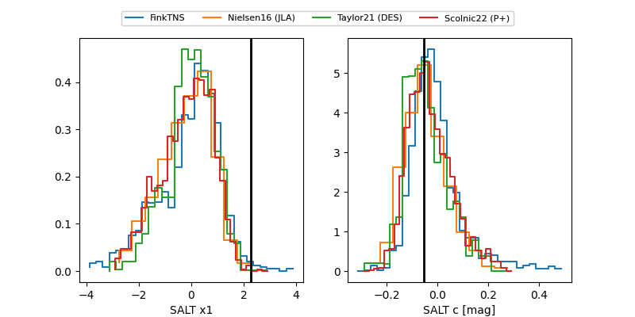

TNS: 2025vre
YSE: 2025vre
2025vre (yse,tns)
PS25hcg (panstarrs)
equatorial (ra, dec) = (4.2217,+17.25368)
galactic (l, b) = (111.2631,-44.83381)

last ps1::g=20.70, ps1::i=20.74, ps1::r=20.97
2 ps1::g, 2 ps1::i, 5 ps1::r detections